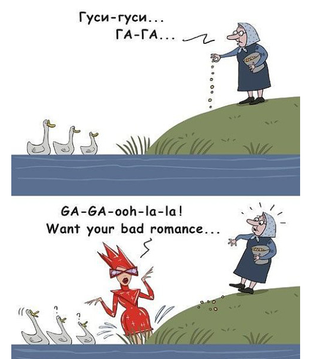

У известной американской певицы, с творчеством которой я к счастью абсолютно не знаком впервые за историю твиттера количество фолловеров превысило рубеж в 9 миллионов человек. 24-летняя Стефани Джоанн Анджелина Джерманотта (так на самом деле зовут Гагу) зарегистрировалась в твиттере в марте 2008 года. По прошествии 3 лет количество поклонников, подписавшихся на её твиты превысило численность жителей в столице Китая Пекине с его 8,6 миллионами человек. 
На втором месте в топ-листе твиттера канадский певец Джастин Бибер. У него 8,3 миллиона фолловеров. Что касается Джастина, то я не только не знаком с его творчеством, но и имя его услышал впервые.
Стоит дополнительно отметить что Леди Гага имеет около 31 миллиона фанатов на фейсбуке. Количество просмотров видео с её участием на Youtube превышает 1 миллиард.